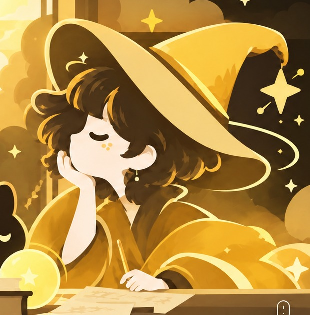
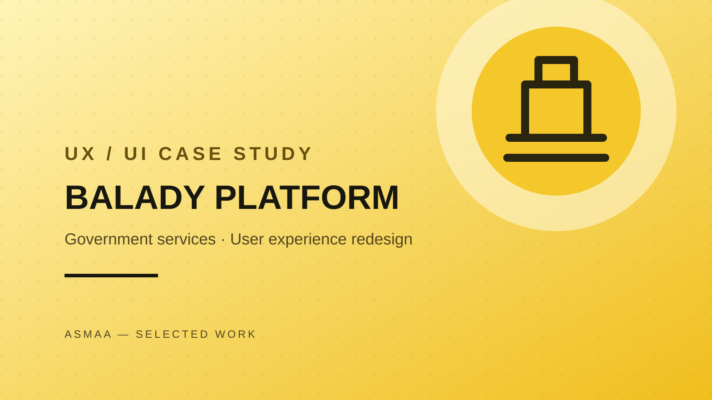
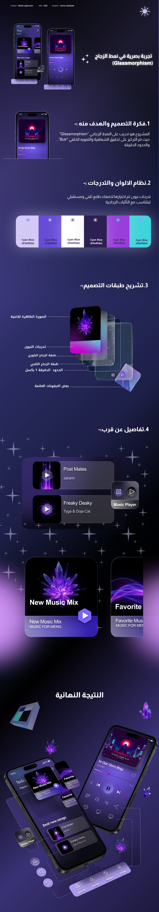
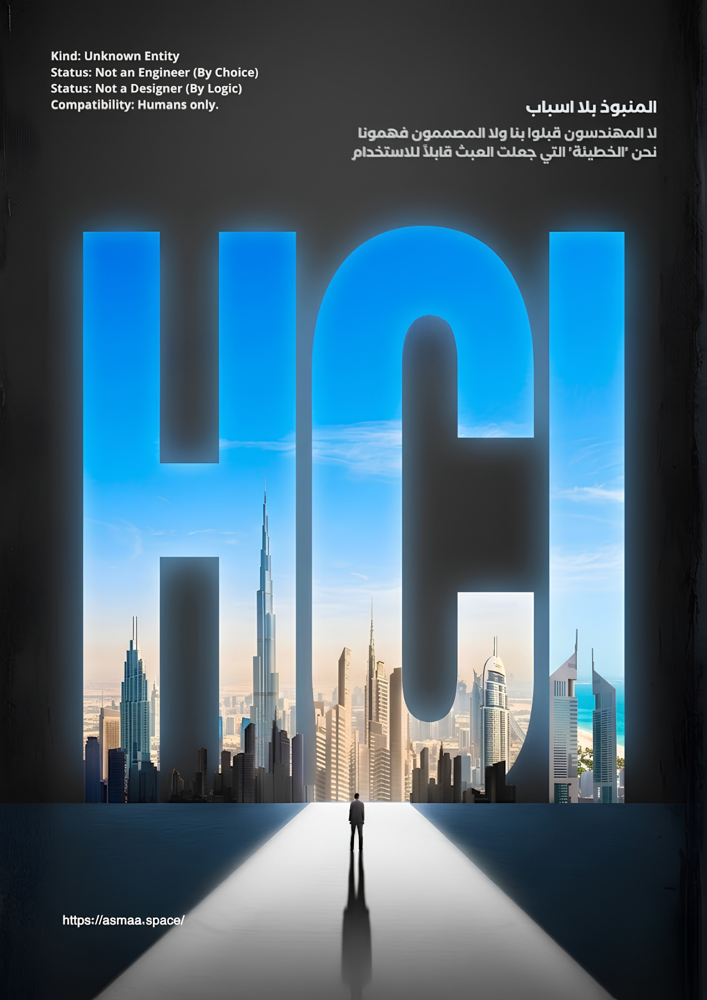
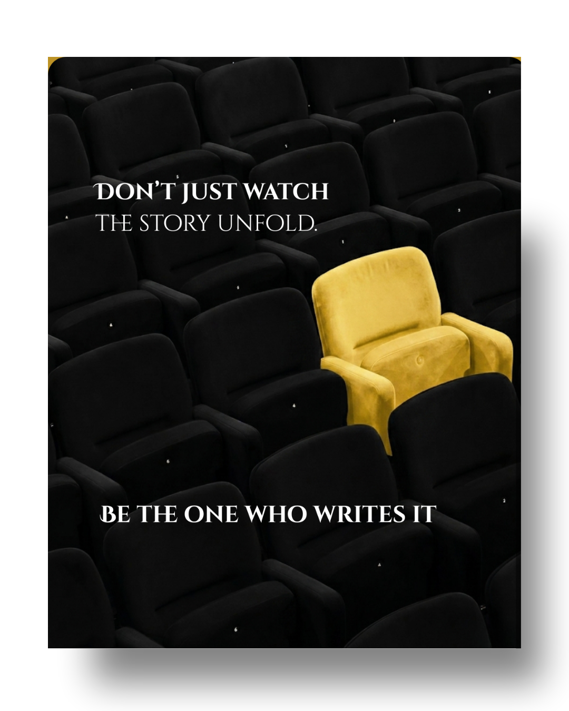

ABILITY 01
UNLOCKEDاستكشاف المستخدم
أبحاث المستخدم · المقابلات · تحليل الاحتياجات · خرائط رحلة المستخدم
أهلًا بكِ في عالمي، حيث يلتقي التصميم بالسحر
أدرس التفاعل البشري الحاسوبي، وأصمّم تجارب رقمية تنطلق من فهم الناس واحتياجاتهم؛ من البحث والاستكشاف إلى النماذج والتفاصيل التفاعلية.

أؤمن أن التجارب المميزة تبدأ بفهم التفاصيل الصغيرة، وتنمو بالفضول والتجربة.
أدرس التفاعل البشري الحاسوبي (HCI)، وأجمع في عملي بين فهم احتياجات المستخدم، والتفكير التصميمي، والإمكانات التقنية. يهمّني تحويل المشكلات المعقدة إلى تجارب واضحة وسهلة الاستخدام.
بالنسبة لي، التصميم ليس مظهرًا فقط؛ بل عملية تبدأ بسؤال صحيح، وتمرّ بالبحث والتجربة، وتنتهي بحل يخدم الناس ويظل في ذاكرتهم.
هذه مجموعة من المشاريع والتجارب التي عملت عليها؛ لكل منها تحدٍّ، وقرارات تصميمية، وما تعلّمته خلال الرحلة.

QUEST 01استكشاف فرص تحسين رحلة المستخدم وجعل الوصول إلى الخدمات الرقمية أكثر وضوحًا.
تصوّر لمنصة تجمع خيارات المقاصف الجامعية وتسهّل اكتشافها والاختيار منها.

QUEST 03تجربة واجهة تستكشف توظيف الطبقات والشفافية في بناء مشغّل موسيقى تفاعلي.

QUEST 04تجربة تصميمية قائمة على التحدي، وتوليد الأفكار، وبناء الحلول.

QUEST 05تطوير الأفكار واختبارها عبر تحدٍّ تصميمي إضافي.
مجالات أعمل من خلالها على فهم المشكلة، وصياغة الحل، وتحويله إلى تجربة قابلة للاستخدام.
أبحاث المستخدم · المقابلات · تحليل الاحتياجات · خرائط رحلة المستخدم
المخططات الهيكلية · النماذج الأولية · تصميم الواجهات · اختبار قابلية الاستخدام
أنظمة التصميم · التفاعل البشري الحاسوبي · إمكانية الوصول · تصميم التفاعلات
التخطيط · التوثيق · تنسيق الفرق · التواصل الفعّال
لديك فكرة أو فرصة تعاون أو مشروع؟ يسعدني أن نتواصل ونرى كيف يمكننا العمل معًا.
تحميل السيرة الذاتية ↓